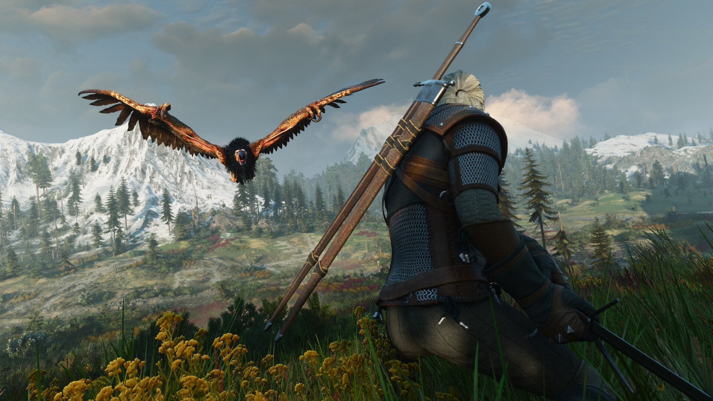
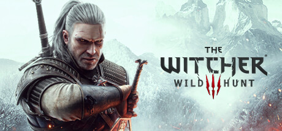

Ведьмак 3: Дикая Охота
Культовая ролевая игра «Ведьмак 3: Дикая Охота» от CD Projekt RED о приключениях Геральта из Ривии. Огромный живой открытый мир, глубокий нелинейный сюжет с моральными дилеммами и атмосфера темного фэнтези.
Подробнее »Half-Life 2
Half-Life 2 совершила переворот благодаря реалистичной физике Havok, грави-пушке и кинематографичному повествованию без кат-сцен.
 Подробнее »
Подробнее »
Cyberpunk 2077
Cyberpunk 2077 переносит в гигантский неоновый мегаполис Найт-Сити с передовой графикой, аугментациями и свободой выбора.
Подробнее »Эпоха ретро-игр
История видеоигр началась в 1970-х на аркадных автоматах. Легендарные Pong, Space Invaders и Pac-Man заложили фундамент мировой игровой индустрии, а домашние приставки открыли игры миллионам.
Подробнее »
The Elder Scrolls V: Skyrim
Культовое фэнтези The Elder Scrolls V: Skyrim с полной свободой исследований провинции.
Подробнее »
Grand Theft Auto V
Grand Theft Auto V — один из самых успешных проектов в истории игровой индустрии.
Подробнее »Игровые движки
Игровые движки Unreal Engine и Unity: эволюция 3D-графики и современных технологий.
Подробнее »Elden Ring
Elden Ring — триумф Souls-like с открытым миром от FromSoftware и Джорджа Мартина.
Подробнее »